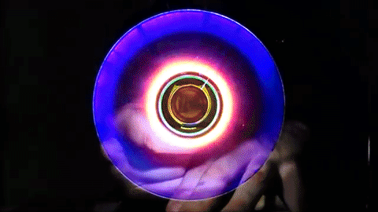

1.Es ondulatoria y corpuscular: Tras distintas investigaciones, se ha determinado que la luz es, a la vez,
ondulatoria (debido a que se propaga a través de ondas) y corpuscular (porque está formada por diminutas partículas llamadas fotones).
2.Se propaga en linea recta: La luz lleva una dirección recta en su propagación.
Las sombras que genera la luz a su paso, son pruebas evidentes de esta caracteristica.
3.Velocidad finita: La lus tiene una velocidad que es finita y puede ser extremadamente rápida.
En el vacío, está puede llegar a desplazarse a cerca de 300.000 km/s. Cuando el ámbito en el que se desplaza la luz es distinto del vacio,
la velocidad de su desplazamiento dependerá de las condiciones del ambiente que afecten su naturaleza electromagnética.
4.Frecuencia: La caracteristica de la frecuencia tiene que ver con la cantidad de ciclos que ocurren en un tiempo determinado.
Es la frecuencia de la luz la que determina el nivel de energía de un cuerpo a mayor frecuencia, mayor energía; a menor frecuencia, menor energía.
5.Longitud de onda: Esta caracteristica tiene que ver con la distancia que existe entre puntos de dos ondas consecutivas que ocurren en un mismo tiempo determinado.
6.Absorción: Los objetos absorben las ondas de luz que inciden sobre ellos, y aquellas que no absorben son las que son percibidas como color.
7.Reflexión: Esta caracteristica tiene que ver con el hecho de que la luz es capaz de cambiar de dirección cuando se refleja en un área.
Esta propiedad indica que, cuando la luz incide sobre un objeto de superficie lisa,
el ángulo en el que se reflejará corresponderá al mismo que tenía el rayo de luz que incidió en primer lugar en la superficie.
8.Refracción: La refracción de la luz está relacionada con lo siguiente, en su recorrido, las ondas de luz pueden atavesar superficies transparentes perfectamente.
Cuando esto sucede, la velocidad de desplazamiento de las ondas se reduce y esto genera que la luz cambie de dirección, lo que genera un efecto de doblez.
9.Difracción: La difracción de la luz es el cambio en la dirección de las ondas cuando estas pasan a través de aberturas, o cuando rodean un obstáculo en su camino.
10.Dispersión: La dispersión es la capacidad que tiene la luz de separarse al atravesar una superficie transparente, y mostrar como consecuencia todos los colores que forman parte de ella.

VELOCIDAD
INICIO